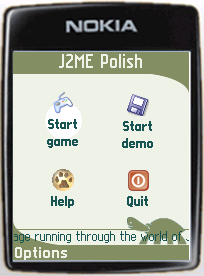
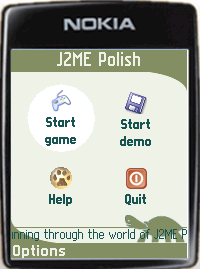

For adding a new background, please create a new project called "background-project" and make sure that the files "enough-j2mepolish-build.jar", "enough-j2mepolish-client.jar" and the "midp2.jar" are on the classpath of the project. These files can be found in the "import" folder of the J2ME Polish installation directory.
Each background needs two implementation classes: one class for the client-side which is responsible for the actual painting and another one for the server-side which is responsible for creating the client-background-class and reading the parameters from the CSS definitions.
As an example we create and integrate an animated background, which paints a "pulsating" circle. Please note that this background is now directly available in J2ME Polish from version 1.0 onwards.
For using a new background, just create a new class which extends the de.enough.polish.ui.Background class.
We are starting with a simple background, which paints a filled out circle. For the constructor we only need one parameter - the desired color of the circle:
//#condition polish.usePolishGui
package com.company.backgrounds;
import javax.microedition.lcdui.Graphics;
import de.enough.polish.ui.Background;
public class PulsatingCircleBackground extends Background {
private final int color;
public PulsatingCircleBackground( int color ) {
super();
this.color = color;
}
public void paint(int x, int y, int width, int height, Graphics g) {
g.setColor( this.color );
g.fillArc( x, y, width, height, 0, 360 );
}
}
The paint method is used to render the background and needs to be implemented by all subclasses of Background. The #condition-directive at the top ensures that the PulsatingCircleBackground is included only when the GUI of J2ME Polish is actually used.
This background is useful, but a bit boring, so we add an animation to it: the background-diameter should grow and shrink constantly. For doing this we need to override the animate()-method, which is used to implement animations. When this method returns "true", a repaint will be triggered resulting in a call of the paint()-method. With returning false the background indicates that no repaint is necessary.
public class PulsatingCircleBackground extends Background {
private final int color;
private final int maxDiameter;
private final int minDiameter;
private int currentDiameter;
private boolean isGrowing = true;
public PulsatingCircleBackground( int color, int minDiameter, int maxDiameter ) {
super();
this.color = color;
this.minDiameter = minDiameter;
this.maxDiameter = maxDiameter;
this.currentDiameter = minDiameter;
}
public void paint(int x, int y, int width, int height, Graphics g) {
g.setColor( this.color );
int centerX = x + width / 2;
int centerY = y + height / 2;
int offset = this.currentDiameter / 2;
x = centerX - offset;
y = centerY - offset;
g.fillArc( x, y, this.currentDiameter, this.currentDiameter, 0, 360 );
}
public boolean animate() {
if (this.isGrowing) {
this.currentDiameter++;
if (this.currentDiameter == this.maxDiameter) {
this.isGrowing = false;
}
} else {
this.currentDiameter--;
if (this.currentDiameter == this.minDiameter) {
this.isGrowing = true;
}
}
return true;
}
}
The implementation uses the field "currentDiameter", which is either decreased or increased in each run of the animate()-method. The constructor now has two additional parameters: the minimum diameter and the maximum diameter for the circle.
For converting CSS-style information into the appropriate background object, we need to implement a converter class which extends de.enough.polish.preprocess.BackgroundConverter.
This class reads the provided CSS information and creates the source-code for creating a new instance:
//#condition false
package com.company.backgrounds;
import java.util.HashMap;
import org.apache.tools.ant.BuildException;
import de.enough.polish.preprocess.BackgroundConverter;
import de.enough.polish.preprocess.Style;
import de.enough.polish.preprocess.StyleSheet;
public class PulsatingCircleBackgroundConverter extends BackgroundConverter {
public PulsatingCircleBackgroundConverter() {
super();
}
protected String createNewStatement(
HashMap background,
Style style,
StyleSheet styleSheet )
throws BuildException {
String minDiameterStr = (String) background.get( "min-diameter");
if (minDiameterStr == null) {
throw new BuildException("Invalid CSS: the pulsating-circle background needs the attribute [min-diameter].");
}
String maxDiameterStr = (String) background.get( "max-diameter");
if (maxDiameterStr == null) {
throw new BuildException("Invalid CSS: the pulsating-circle background needs the attribute [max-diameter].");
}
// now check if these diameters have valid values:
int minDiameter = parseInt("min-diameter", minDiameterStr);
int maxDiameter = parseInt("max-diameter", maxDiameterStr);
if (maxDiameter <= minDiameter ) {
throw new BuildException("Invalid CSS: the [min-diameter] attribute of the pulsating-circle background needs to be smaller than the [max-diameter].");
}
if (minDiameter < 0 ) {
throw new BuildException("Invalid CSS: the [min-diameter] attribute of the pulsating-circle background needs to be greater or equals 0.");
}
// okay, the min- and max-diameter parameters are okay:
return "new com.company.backgrounds.PulsatingCircleBackground( "
+ this.color + ", " + minDiameterStr + ", " + maxDiameterStr + ")";
}
}
In the method "createNewStatement" we read the provided values from the HashMap. To parse these values we can the helper-method parseInt( String attributeName, String attributeValue ), parseFloat( String attributeName, String attributeValue ), parseColor( String colorValue ) and getUrl( String url ).
In our example we want to use the attribute "color", "min-diameter" and "max-diameter". The color value is parsed by the super-class already and can be accessed with "this.color". In case no color has been defined, the background color defaults to white. When a required value is missing or a value is set wrong, we throw a BuildException explaining the details of what went wrong. When everything is okay, we return a String in which a new instance of our background is created.
We included the #condition "false", so that this file is never included in the J2ME application. This is useful when the same source folder is used for the client-background-class as well as the server-background-class.
To use our background, we need to ensure that the classes can be found and to use it in the polish.css file:
At first we make sure, that the classpath includes our background-project. The easiest way is to do this in the definition of the J2ME Polish task within the build.xml:
<taskdef name="j2mepolish" classname="de.enough.polish.ant.PolishTask" classpath="import/enough-j2mepolish-build.jar:import/jdom.jar: import/proguard.jar:../background-project/bin/classes" />
Secondly we need to inform J2ME Polish about the additional source-folder.We do this by specifying the "srcDir"-attribute of the
<j2mepolish>
[...]
<build
symbols="ExampleSymbol, AnotherExample"
imageLoadStrategy="background"
fullscreen="menu"
usePolishGui="true"
srcDir="source/src:../background-project/source/src"
>
[...]
</build>
</j2mepolish>
Thirdly and lastly we need to use the new background in the "resources/polish.css" file of our application. As the type we need to define the SERVER-side converting class:
focused {
padding: 5;
background {
type: com.company.backgrounds.PulsatingCircleBackgroundConverter;
color: white;
min-diameter: 20;
max-diameter: 70;
}
font {
style: bold;
color: fontColor;
size: small;
}
layout: expand | center;
}
Now we can build the application by calling Ant to check the result:


Please refer to these JavaDoc resources for detailed information: